Accelerate Reed-Solomon Erasure Codes on GPUs
Student: Shuai Yuan,
Advisor: Prof. Jerry Chi-Yuan Chou
LSA Lab, NTHU
Outline
- Introduction
- Overview of Our Acceleration Targets
- Accelerating Operations in Galois Field
- Accelerating Matrix Multiplication
- Reducing Data Transfer Overhead
- Experiment
- Conclusion
Introduction
Erasure Codes
A redundancy solution for fault-tolerance, widely used in:
- signals from deep space satellites
- reliable multimedia multicasting
- reliable storage systems
Cloud Storage Systems: Why Redundancy?
- Cloud storage vendors claim to provide highly available and reliable services in their SLA (Service-Level Agreement) with the customers. Both availability and reliability imply strict fault tolerance requirements for cloud storage system.
-
However, as the scale of storage system grows larger and larger, the probability of failure becomes significant:
→ SLA violation.
Therefore, redundancy must be introduced into cloud system.
Cloud Storage Systems: Why Redundancy?
- The simplest and straightforward redundancy solution is replication of the data in multiple storage nodes.
- Triple replication solution have been favored in cloud storage systems like the GFS (Google File System) and HDFS (Hadoop Distributed File System).
Cloud Storage Systems: Why Erasure Codes?
- Problem of replication: large storage overhead.
- Erasure codes can reduce the storage overhead significantly while at the same time maintaining the same level of fault tolerance as replication → a better redundancy solution.
Cloud Storage Systems: Why Erasure Codes?
$(n, k)$ MDS (Maximum Distance Separable) codes where $n$ and $k$ are integers and $n > k$:
- File → $k$ equal-size native data chunks.
- $k$ equal-size native chunks → $(n - k)$ code chunks.
- The native and code chunks are distributed on $n$ different storage nodes.
- tolerates the failure of any $(n - k)$ storage nodes.
Example:

|

|
| Reed-Solomon Code $(n=4, k=2)$ | Triple Replication |
Save 50% space!
Cloud Storage Systems: Why Reed-Solomon Codes?
- Reed-Solomon codes $RS(k, n-k)$ are one of the most popular MDS erasure codes.
- $RS(10, 4)$ is used in HDFS-RAID in Facebook and $RS(6, 3)$ is used in GFS II in Google.
Shortcomings of Reed-Solomon Codes
- extra high computation cost compared to replication: encoding and decoding.
- Our contributions: use GPU to accelerate the Reed-Solomon encoding and decoding.
Overview of Our Acceleration Targets
Reed-Solomon Code Overview

|

|
| Reed-Solomon Encoding | Reed-Solomon Decoding |
Acceleration Targets - 1
Computation bottleneck: matrix multiplication.
\begin{array}{rl} & C = A \cdot B \\ \equiv & ( c_{j} = \sum_{i = 1}^{k} a_{i,j} \times b_{i} ) \end{array}Addition and multiplication are defined as arithmetic over Galois Field GF($2^8$).
Acceleration targets for computation:
- Arithmetic over Galois Field.
- Matrix multiplication.
GPU-Accelerated Reed-Solomon Code Overview
| Reed-Solomon Encoding in a GPU | 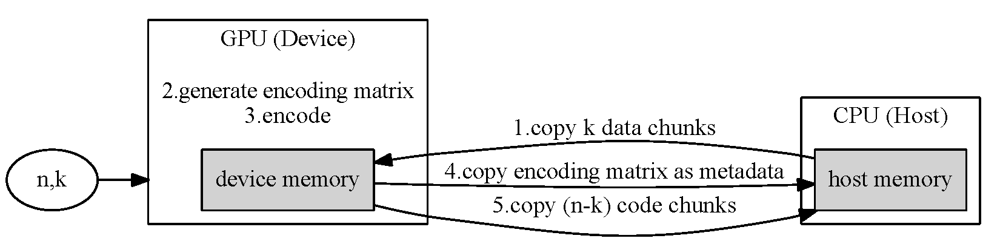 |
| Reed-Solomon Decoding in a GPU | 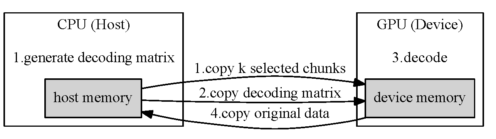 |
Acceleration Targets - 2
Extra overhead in GPU implementation: data transfers between CPU and GPU.
Another acceleration targets: reducing data transfer overhead.
Overview of Our Acceleration Targets
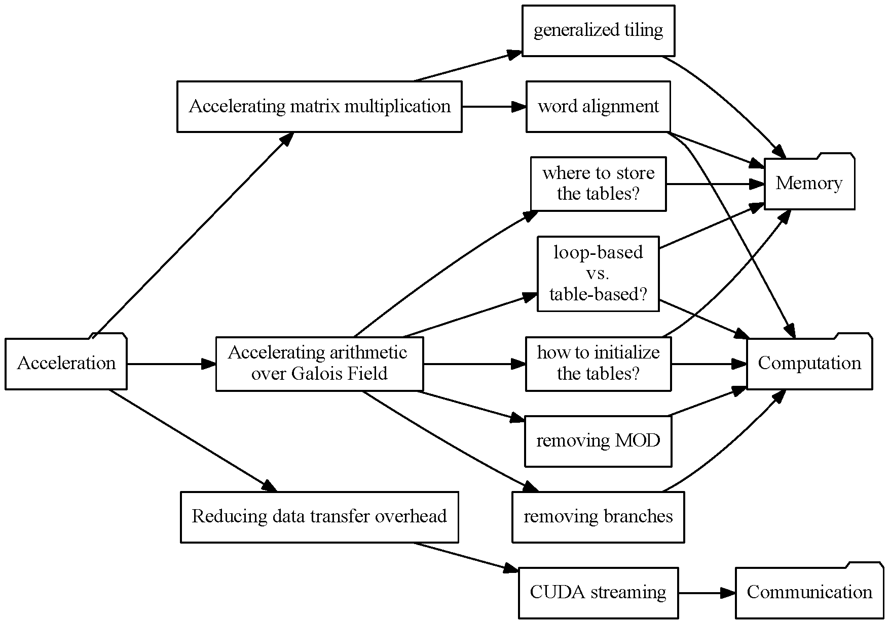Accelerating Arithmetic over Galois Field
Brief Introduction of Galois Field
GF($2^w$) contains $2^w$ polynomials. For each polynomial, its degree is at most $w−1$ and its coefficient is in {0, 1}.
For GF($2^8$), every element can be one-to-one mapped into a byte, and polynomial operations in GF($2^8$) is isomorphic to operations on bytes:
- Addition: isomorphic to bitwise XOR → inexpensive.
- Multiplication: isomorphic to bitwise operations → still time-consuming.
Therefore, how to accelerate multiplication over GF($2^8$) will be our focus.
GPU Accelerating Options for Multiplication
- loop-based method
- a set of table-based methods
Loop-based Method
- compute directly: cost a loop of at most eight iterations to multiply two elements in GF($2^8$).
- computation bound
Table-based Methods
precompute and store the results in tables
e.g. Full Multiplication Table
| $\ldots$ | 38 | 39 | 40 | $\ldots$ | |
| $\vdots$ | $\ldots$ | $\ldots$ | $\ldots$ | $\ldots$ | $\ldots$ |
| 20 | $\ldots$ | 194 | 214 | 26 | $\ldots$ |
| 21 | $\ldots$ | 228 | 241 | 50 | $\ldots$ |
| 22 | $\ldots$ | 142 | 152 | 74 | $\ldots$ |
| $\vdots$ | $\ldots$ | $\ldots$ | $\ldots$ | $\ldots$ | $\ldots$ |
Table-based Methods
| Full Multiplication Table | "Double Table"/"Left-Right Table" | Log&Exp Table | |
| Space Complexity for GF($2^w$) | $O(2 ^ { 2w })$ | $O(2^{3w/2+1})$ | $O( 2^{w+1} )$ |
| Computation Complexity | one table-lookup | 2 table-lookup, 2 AND, 1 XOR, and 1 SHIFT | 3 table-lookup, 1 MOD, 1 ADD, and 2 branches |
| Memory space for GF($2^8$) | 64 KB | 8 KB | 512 Bytes |
Use log&exp table-based method in our GPU implementation.
GPU Implementation: Loop-based or Table-based?

- The loop-based method is able to achieve the maximum bandwidth even when the chunk size is small.
- The bandwidth of the table-based method can still scale up as the chunk size grows larger.
- The maximum bandwidth of the table-based method exceeds that of the loop-based method.
[1] Plank J S, Xu L. Optimizing Cauchy Reed-Solomon codes for fault-tolerant network storage applications[C]//NCA 2006.
[2] Shojania H, Li B, Wang X. Nuclei: GPU-accelerated many-core network coding[C]//INFOCOM 2009.
[3] Kalcher S, Lindenstruth V. Accelerating Galois Field arithmetic for Reed-Solomon erasure codes in storage applications[C]//Cluster Computing (CLUSTER) 2011.
[4] Chu X, Zhao K. Practical random linear network coding on GPUs[M]//GPU Solutions to Multi-scale Problems in Science and Engineering. Springer Berlin Heidelberg, 2013: 115-130.
Further Improvement of the Log&exp Table-based Method
baseline:
uint8_t gf256_mul(uint8_t a, uint8_t b)
{
int result;
if (a == 0 || b == 0) {
return 0;
}
result = (gf256_log_table[a] + gf256_log_table[b]) % (NW-1);
return gf256_exp_table[result];
}
Further Improvement of the Log&exp Table-based Method
| Improvement Approach 1 |
Replace the slow modular operations with more efficient operations.
|
| Improvement Approach 2 |
Remove the slow modular operations by augmenting one table.
|
| Improvement Approach 3 |
Further eliminates the conditional branches by augmenting both two tables.
|
Further Improvement of the Log&exp Table-based Method
In GPU implementation, where to store the tables and how to initialize them will affect the performance.
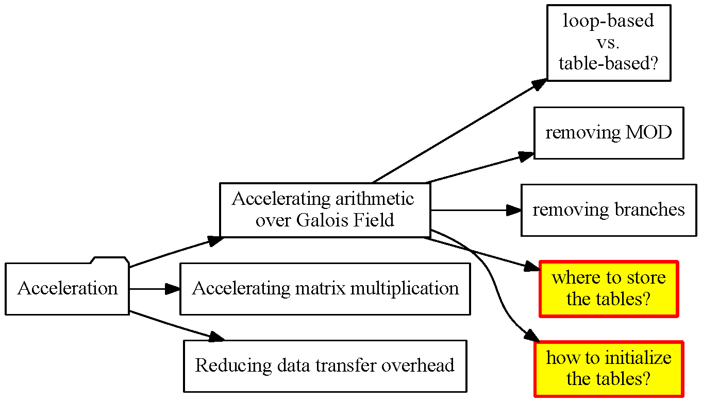Further Improvement of the Log&exp Table-based Method

Appropriate GPU memory:
- constant memory: off-chip memory whose accesses are usually cached in the constant cache.
- shared memory: on-chip memory which has the smallest access latency except the register file.
Further Improvement of the Log&exp Table-based Method
What we have implemented:
- Store two tables in the constant memory and initialize them at compile time.
- Store two tables in the shared memory and run-time initialize them serially at the beginning of each kernel function.
- Store two tables in the off-chip memory and then load into the shared memory parallely at the beginning of each kernel function.
Further Improvement of the Log&exp Table-based Method
encoding a 1GB file with $k = 4$ and $n = 6$.

- The elimination of conditional branches improves the performance.
- Accessing the tables in the constant memory is more time-consuming.
Accelerating Matrix Multiplication
Naive Implementation

Naive Implementation
Naive Implementation

Naive Implementation
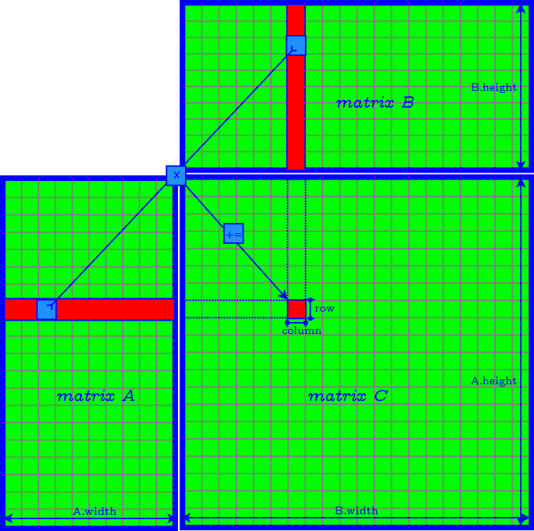Problems of Naive Implementation
- a lot of global memory (off-chip) transactions: each takes 400 - 800 clock cycles.
- memory access in column major → poor temporal locality and high cache missrate.
Square-Tiling Algorithm

Problems of Square-Tiling Algorithm
not suitable for general input cases of Reed-Solomon Codes:
a small matrix multiple a huge matrix
- encoding--A: $(n - k) \times k$, B: $k \times CS$.
- decoding--A: $k \times k$, B: $k \times CS$.
where
- $n$: total chunk number (1-100)
- $k$: native chunk number (1-100)
- $CS$: chunk size (more than 10,000,000)
Generalized Tiling Algorithm

How to Determine the Parameter of Tiles
- tileDepth
- tileWidthRow
- tileWidthCol
How to Determine the Parameter of Tiles
- set tileDepth to $A.width$ ($k$) → remove the loop of accessing matrix $A$ and $B$ tile by tile.
How to Determine the Parameter of Tiles
- set tileDepth to $k$ → remove the loop of accessing matrix $A$ and $B$ tile by tile.
How to Determine the Parameter of Tiles
- set tileDepth to $k$ → remove the loop of accessing matrix $A$ and $B$ tile by tile.
How to Determine the Parameter of Tiles
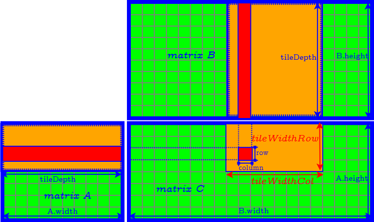- $\textrm{tileWidthRow} \times \textrm{tileWidthCol}$ is equal to the CUDA block size (number of threads in a CUDA block) → find the best CUDA block size by tuning occupancy.
- Finally we need to further determine tileWidthRow and tileWidthCol.
How to Determine the Parameter of Tiles
Define the aspect ratio $AR$ of the tile in the result matrix as: $$ AR = \dfrac{ \textrm{tileWidthRow} }{ \textrm{tileWidthCol} } $$
three strategies:
| Min $AR$ | minimize tileWidthRow, maximize tileWidthCol |
| $AR=1$ | $\textrm{tileWidthRow} = \textrm{tileWidthCol}$ |
| Max $AR$ | maximize tileWidthRow, minimize tileWidthCol |
How to Determine the Parameter of Tiles
use the following testcases for encoding:
| testcase | $k$ | $n$ | chunk size (MB) | Description | |
|---|---|---|---|---|---|
| file size | code chunk number | ||||
| 1 | 2 | 200 | 1 | small | large |
| 2 | 4 | 150 | 1 | ||
| 3 | 4 | 200 | 1 | ||
| 4 | 2 | 200 | 10 | large | large |
| 5 | 4 | 150 | 10 | ||
| 6 | 4 | 200 | 10 | ||
| 7 | 4 | 6 | 256 | large | small |
| 8 | 8 | 16 | 128 | ||
How to Determine the Parameter of Tiles

- The first six testcases, especially the 4th-6th ones, represent the worse cases for the strategy "Max $AR$".
- The last two testcases represent the worse cases for the strategy "$AR = 1$".
- Overall, the strategy "Min $AR$" is the best.
How to Determine the Parameter of Tiles
 |
- Generally, the "Min $AR$" strategy has the least number of conditional branches, while the "Max $AR$" has the most. The overhead of branches is significant when encoding a large file into a large number of code chunks.
How to Determine the Parameter of Tiles
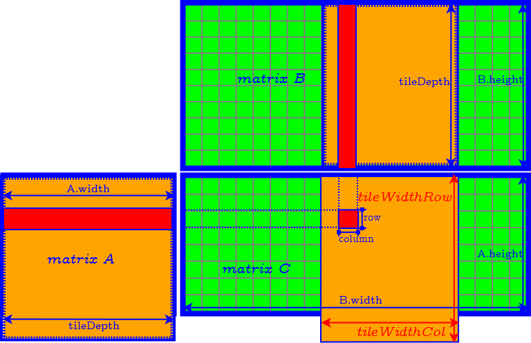- The "$AR=1$" strategy has significant performance degradation when the number of code chunks is smaller than tileWidthRow (wasting cache space, extra boundary checking).
Further Improvement of Tiling Algorithm
When each chunk can be word-aligned, we can further improve the tiling algorithm.
Observation 1: Byte-length Matrix Multiplication
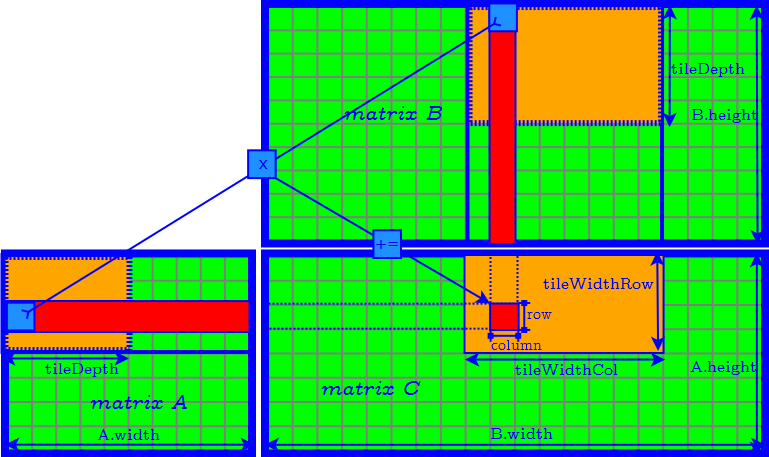Multiplication: table look-ups → memory accesses- Addition: 8-bit XORs -> ALU operations
- Each ALU operation:
operand1 (8-bit) XOR operand2 (8-bit) = result (8-bit) - GPU Execution Units: 32-bit
- Each ALU operation:
Improvement Technique 1: Byte-by-word Matrix Multiplication
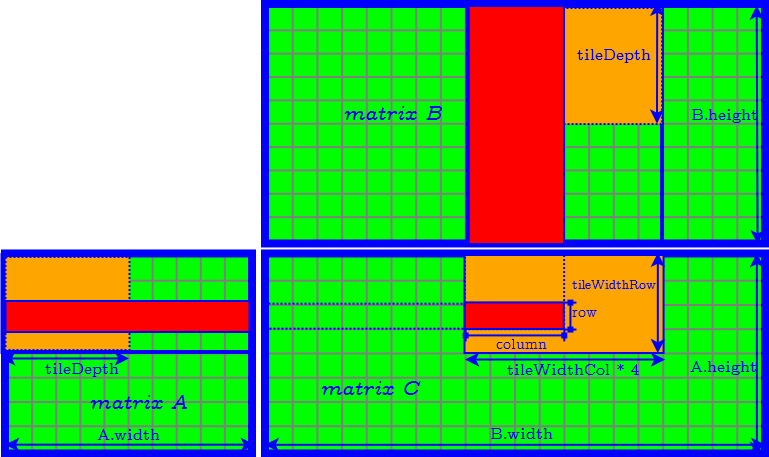Improvement Technique 1: Byte-by-word Matrix Multiplication

Improvement Technique 1: Byte-by-word Matrix Multiplication

Improvement Technique 1: Byte-by-word Matrix Multiplication
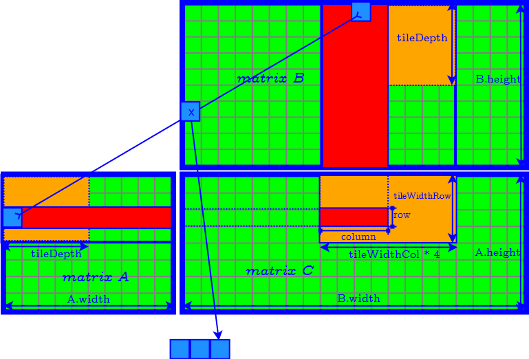Improvement Technique 1: Byte-by-word Matrix Multiplication

Improvement Technique 1: Byte-by-word Matrix Multiplication
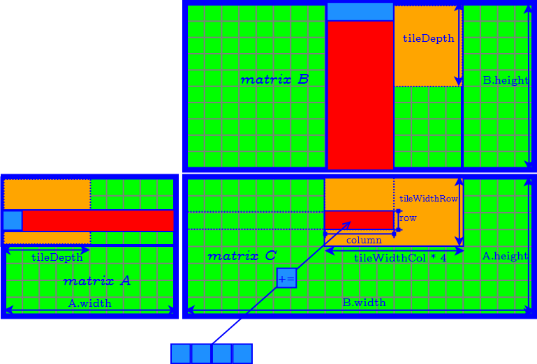Observation 2: Global Memory Transactions
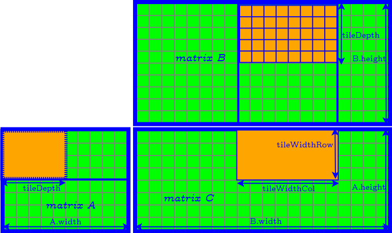a lot of 8-bit global memory transactions!
Improvement Technique 2: Packing Memory Transactions
pack 8-bit global memory transactions into 32-bit transactions → reduce global memory load and store.
Further Improvement of Tiling Algorithm
e.g. $k = 4$, $n = 200$, chunk size = 200 MB
| Original | Word-alignment | Improvement | |
| Effective bandwidth (MB/s) | 1119.419693 | 1591.051924 | 42.13% |
| ALU Operations | 12331000000 | 3116531712 | 74.73% |
| Global Memory Load Transactions | 516963328 | 131611648 | 74.54% |
| Global Memory Store Transactions | 64225280 | 16056320 | 75% |
| Number of Branches | 6685685440 | 2703981504 | 59.56% |
Reducing Data Transfer Overhead
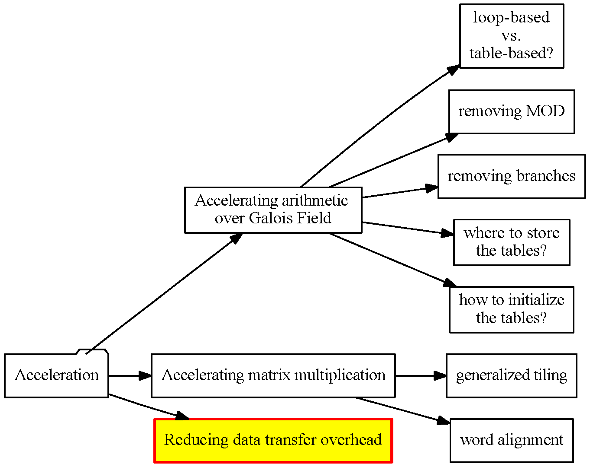Using CUDA Streams
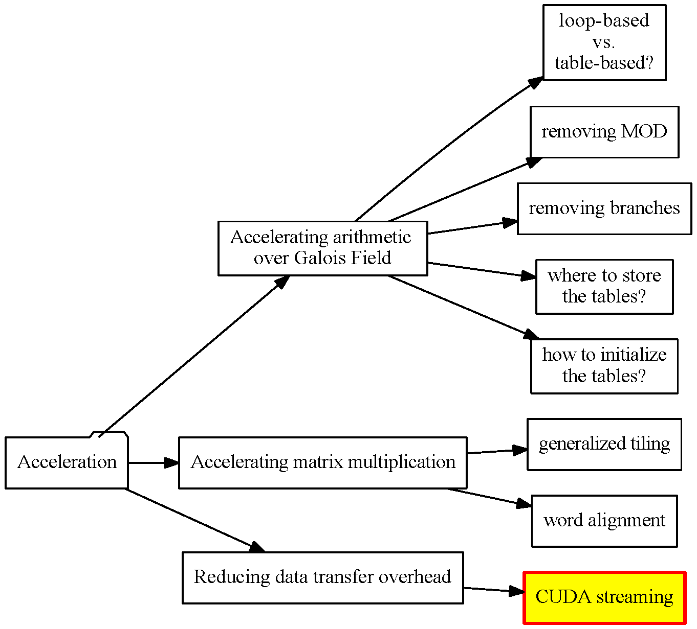Using CUDA Streams
CUDA streams are used for further overlapping data transfers with computation.

Sequential vs. Concurrent copy and execute
Using CUDA Streams
encoding under $k = 4, n = 6$ settings.
The input file size is scaled from 1000 MB to 1800 MB.

- Using CUDA streaming can improve the performance by more than 29%.
- As the file size increases, the data transfer overhead increases, and the improvement of CUDA streaming is more significant.
Using CUDA Streams
encoding a 2000 MB file under $k = 4, n = 6$ settings.

The kernel execution time is increasing with the growth of the CUDA stream number. → The overhead of kernel execution will exceed the time saving of data transfer at some point.
Experiment
Experiment Setup
Experiment Setup
- CentOS-6 with 2.6.32 Linux kernel.
- Intel Xeon Processor E5-2670 v2 x 2
- 10 cores
- 2.5 GHz
- NVIDIA Tesla K20X GPU x 2
- 2688 CUDA cores
- peak performance: 1.31 Tflops (double precision floating point calculation) and 3.95 Tflops (single precision floating point)
- maximum size of GPU GDDR5 memory: 6 GB
- theoretical memory bandwidth 243 GB/s
- two copy engines → supports concurrent data copy and kernel execution
- maximum bidirectional bandwidth of the PCI-Express bus: 8 GB/s
Experiment Setup
- Input files are randomly generated.
- Most of our experimental results reflect the average of 100 runs.
- Due to the similarity of the performance result of encoding and that of decoding in most experiments, the latter one is omitted.
Overall Performance Evaluation
We evaluate the overall performance by encoding a 1600 MB file with $k = 4, n = 6$.
Overall Performance Evaluation
Step-by-step Improvement
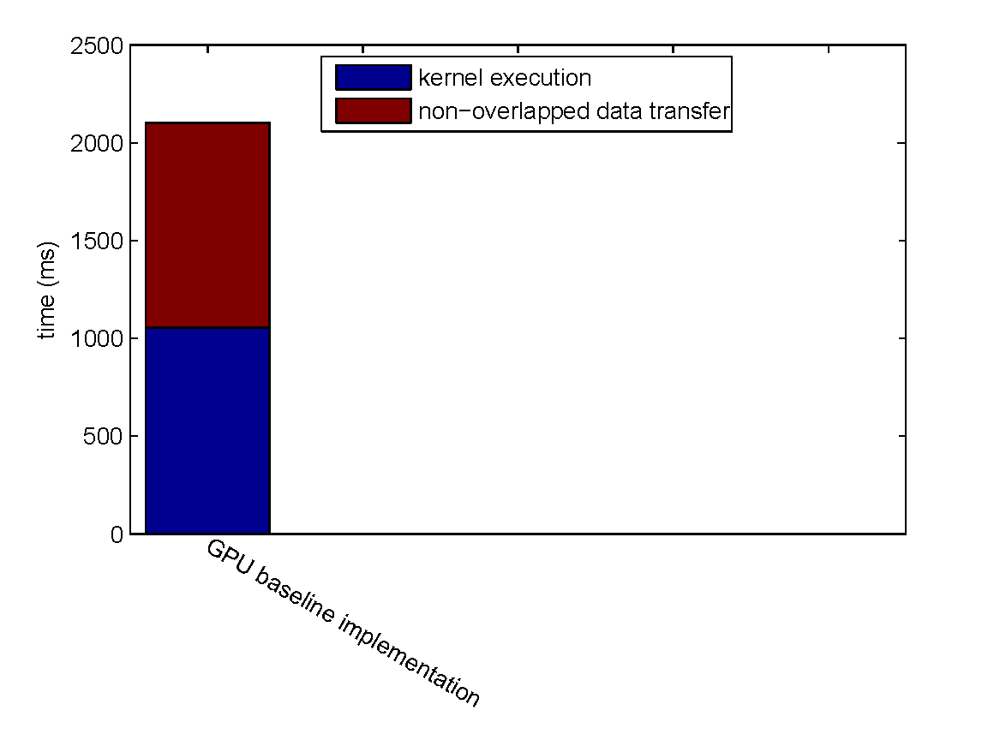Overall Performance Evaluation
Step-by-step Improvement
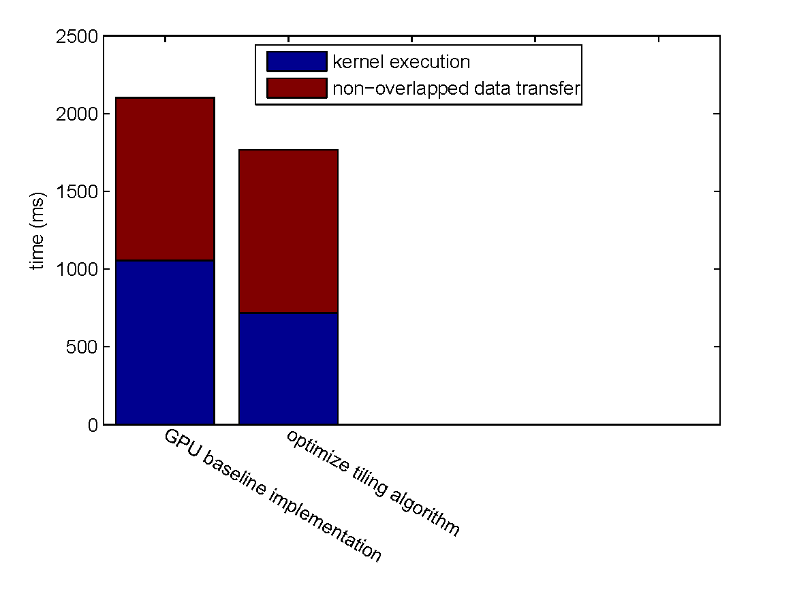| Step Speedup | Cumulative Speedup | |||
| Kernel Execution | Non-overlapped Data Transfer | Kernel Execution | Non-overlapped Data Transfer | |
| optimize tiling algorithm | 1.469 x | 0 | 1.469 x | 0 |
Overall Performance Evaluation
Step-by-step Improvement
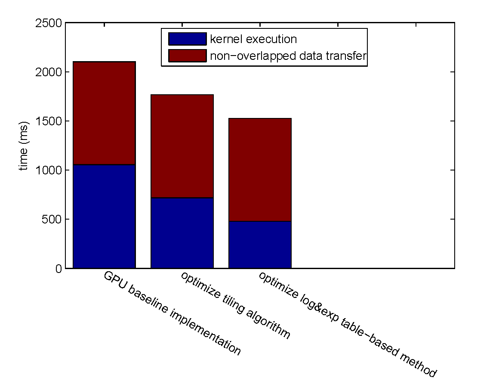| Step Speedup | Cumulative Speedup | |||
| Kernel Execution | Non-overlapped Data Transfer | Kernel Execution | Non-overlapped Data Transfer | |
| optimize tiling algorithm | 1.469 x | 0 | 1.469 x | 0 |
| optimize log&exp table-based method | 1.502 x | 0 | 2.206 x | 0 |
Overall Performance Evaluation
Step-by-step Improvement
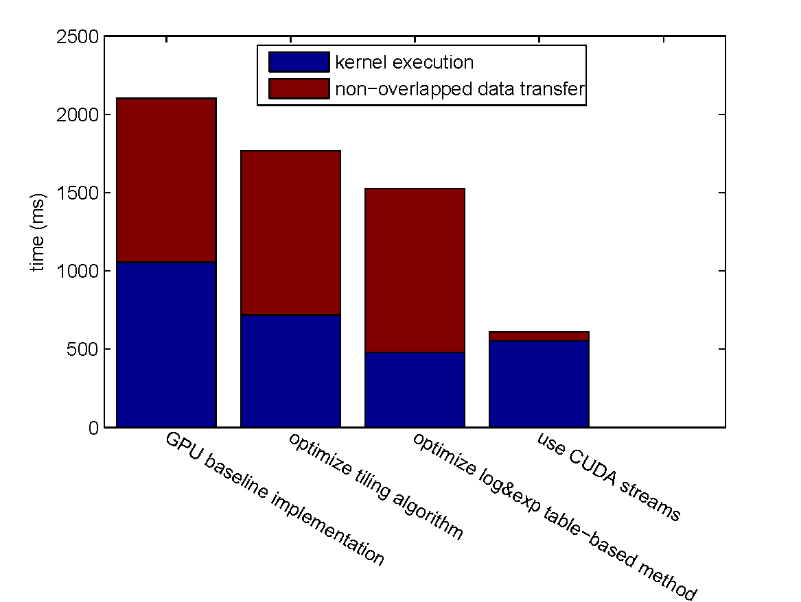| Step Speedup | Cumulative Speedup | |||
| Kernel Execution | Non-overlapped Data Transfer | Kernel Execution | Non-overlapped Data Transfer | |
| optimize tiling algorithm | 1.469 x | 0 | 1.469 x | 0 |
| optimize log&exp table-based method | 1.502 x | 0 | 2.206 x | 0 |
| use CUDA streams | 0.862 x | 18.452 x | 1.902 x | 18.452 x |
Overall Performance Evaluation
Step-by-step Improvement
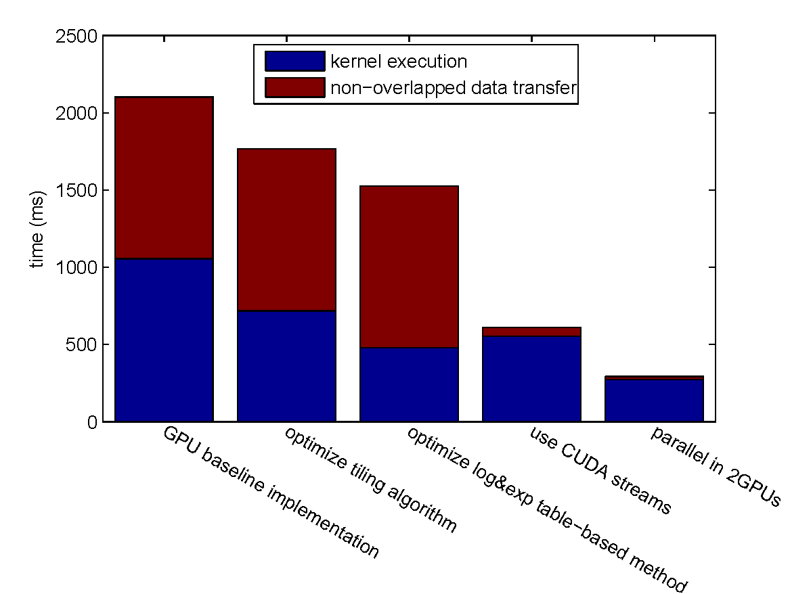| Step Speedup | Cumulative Speedup | |||
| Kernel Execution | Non-overlapped Data Transfer | Kernel Execution | Non-overlapped Data Transfer | |
| optimize tiling algorithm | 1.469 x | 0 | 1.469 x | 0 |
| optimize log&exp table-based method | 1.502 x | 0 | 2.206 x | 0 |
| use CUDA streams | 0.862 x | 18.452 x | 1.902 x | 18.452 x |
| parallel in 2GPUs | 2.030 x | 2.857 x | 3.861 x | 52.718 x |
Overall Performance Evaluation
GPU vs. CPU
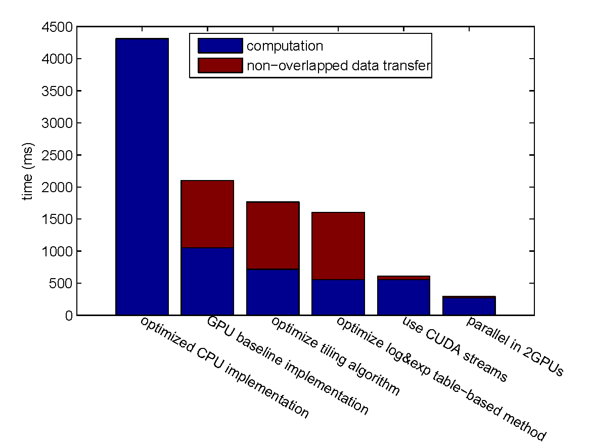- best CPU implementation (Jerasure library, compiled by clang with the -O3 compiler optimization flag): 4309.08 ms.
- optimized GPU implementation: 292.977 ms (14.71x speedup).
Conclusion
- We have studied several techniques to improve the performance of Reed-Solomon codes according to their coding mechanism, and figured out the best choices on the basis of GPU architecture.
- We have illustrated methods to reduce the data transfer overhead introduced by the GPU implementation.
- We present an optimized GPU implementation of Reed-Solomon Codes, which can achieve a speedup of 14.71 over the current best CPU implementation.
Future Works
- Better corporation of CPU and GPU.
- Heuristic strategies for deciding the best CUDA stream number.